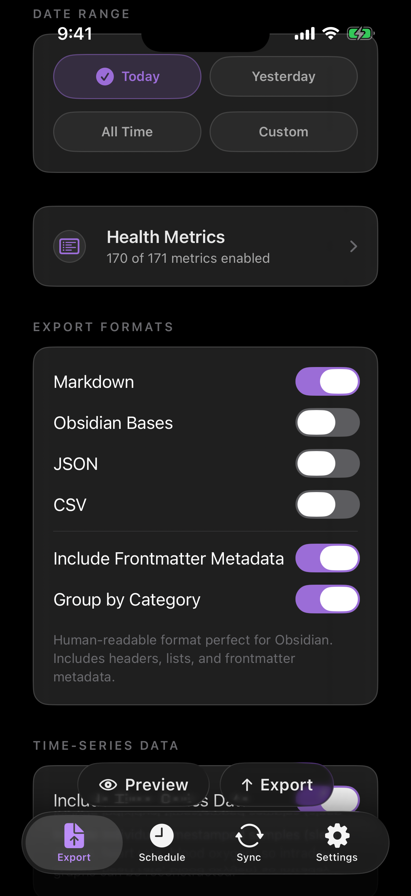
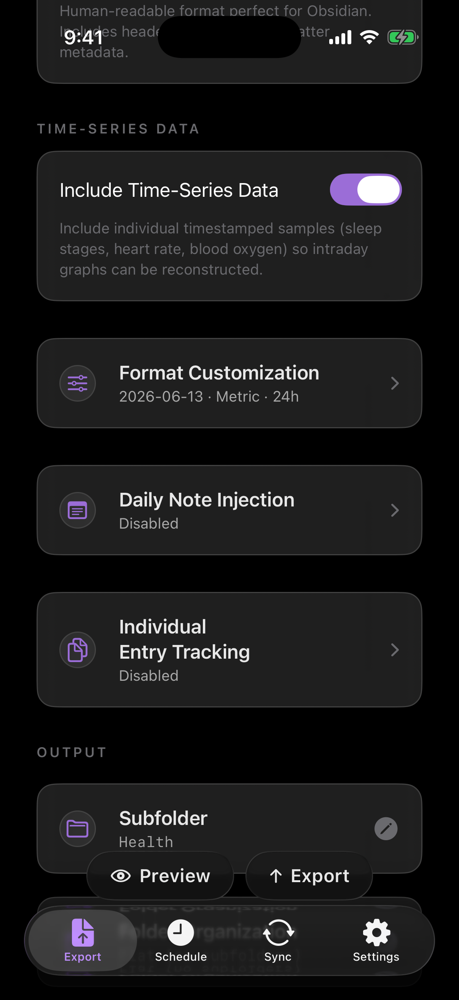

How to export Apple Health data to Obsidian.
Health.md turns the Apple Health data on your iPhone into plain files for an Obsidian vault: Markdown notes, Obsidian Bases-ready frontmatter, JSON, CSV, and optional Daily Note updates.

If you use Obsidian as a personal operating system, Apple Health is one of the most useful data sources to bring into the vault. Steps, sleep, workouts, heart data, mindfulness sessions, symptoms, nutrition, and other HealthKit categories become more valuable when they live next to your journal, training notes, weekly reviews, and scripts.
The goal is not to lock your health archive inside another dashboard. The goal is to create durable local files that you can read, diff, back up, graph, query, and reorganize over time.
The quick workflow
- Install Health.md on the iPhone that has access to Apple Health.
- Grant Health permissions for the metrics you want to export.
- Pick an Obsidian vault folder or another folder available through Files.
- Choose the export formats: Markdown, Obsidian Bases, JSON, CSV, or a mix.
- Select a date range, preview the files, then export.
- Optionally enable Daily Note Injection to merge metrics into existing daily notes.
Choose an Obsidian destination
Health.md writes to folders you choose. That can be an Obsidian vault in iCloud Drive, an on-device folder, a file-provider location, or a Mac destination when you use the companion app. The iPhone remains the HealthKit source; the Mac workflow is only a local destination for files that are configured and prepared from the iPhone.
A common vault layout is simple:
Obsidian Vault/
Health/
2026-06-13.md
2026-06-14.md
Daily/
2026-06-13.mdThe Health/ folder is useful for full daily exports. The Daily/ folder is useful when you want selected metrics merged into notes you already write by hand.
Pick the right export format
Health.md supports four daily export formats, and you do not have to choose only one. Markdown is best for reading inside Obsidian. Obsidian Bases is best when you want structured frontmatter that can power database views. JSON is best for scripts and local automation. CSV is best for spreadsheets and data tools.

A Markdown export can look like this:
---
date: 2026-06-13
type: health-data
steps: 12642
sleep_total_hours: 7.31
workout_count: 1
---
# Health Data - 2026-06-13
## Activity
- Steps: 12,642
- Active Energy: 604 kcalAn Obsidian Bases export uses the same idea, but leans harder into clean frontmatter properties: dates stay dates, numbers stay numeric, and fields such as steps, sleep_total_hours, resting_heart_rate, and workout_details are ready for Bases views.
JSON exports include top-level fields such as date, type, and units, followed by category objects like activity, sleep, heart, vitals, and workouts. CSV exports use a stable Date,Category,Metric,Value,Unit,Timestamp header, with timestamps filled in for individual samples when available.
Use Daily Note Injection for journal workflows
Daily Note Injection is for people who already live in daily notes. Instead of creating only separate health files, Health.md can merge selected metrics into the YAML frontmatter of an existing note such as Daily/2026-06-13.md.

That gives you a daily note that can still be written by hand while Health.md manages the health fields:
---
date: 2026-06-13
steps: 12642
sleep_total_hours: 7.31
resting_heart_rate: 58
---
# Saturday
Morning notes, workout reflections, meals, symptoms, or anything else you track.If the daily note already has frontmatter, Health.md preserves your keys and updates the fields it owns. If you enable body sections, the app-managed health sections are replaced cleanly on each export so repeated exports remain idempotent.
Decide which metrics belong in your vault
The current Health.md data reference documents 171 selectable metrics across 18 HealthKit categories. You can keep the vault lightweight by exporting only a few high-signal properties, or build a fuller archive with sleep stages, heart-rate samples, workouts, vitals, nutrition, symptoms, and other categories.
A good starting set for Obsidian is:
- Activity: steps, walking/running distance, active energy, exercise time.
- Sleep: total sleep, bedtime, wake time, deep sleep, REM sleep.
- Heart: resting heart rate, average heart rate, heart rate variability.
- Workouts: workout count, duration, distance, and workout details.
- Mindfulness or symptoms: useful if they already support your journal workflow.
Keep it local-first
Health.md is designed around files you control. HealthKit reads happen on your Apple devices, and the exported Markdown, Bases, JSON, and CSV files land in the folder you choose. There is no Health.md cloud account for your health archive. If you send exports to a Mac, the Mac acts as a local destination rather than a remote health-data service.
That local-first shape matters for health data. You can back up the vault, sync it with the provider you already trust, version it with your own tools, or delete the exported files without asking a service to remove your account.
Troubleshooting notes
- If exports are empty, open iOS Settings and confirm Health.md has permission for the relevant Apple Health categories.
- If Obsidian does not see the files, confirm the destination folder is inside the vault Obsidian is opening on that device.
- If you use scheduled exports, remember that iOS background refresh is opportunistic. Treat the scheduled time as a target, not a guarantee.
- If you need database-style views, enable Obsidian Bases or keep Markdown frontmatter enabled so properties are queryable.
What to read next
For exact field names, examples, and app screens, start with the Export docs, Daily Note Injection docs, and the generated Data Reference.